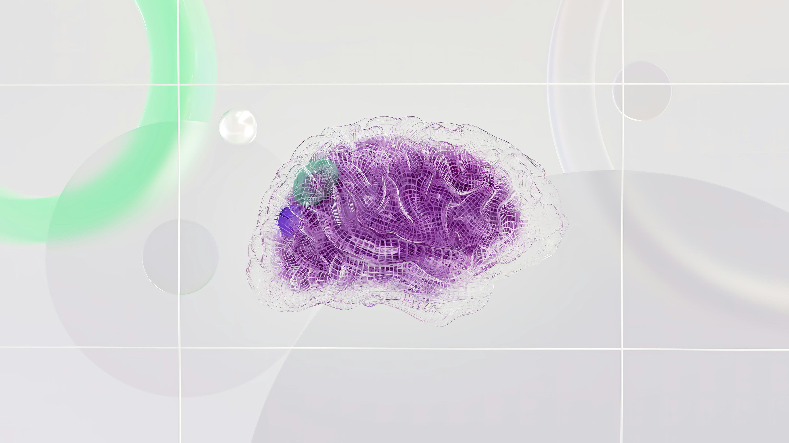
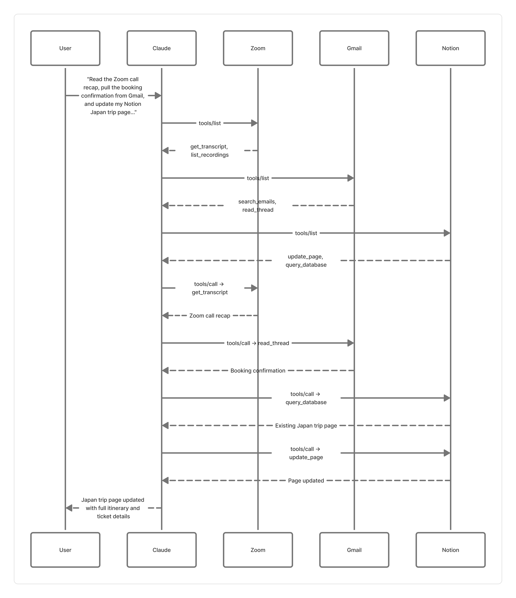

|

Image: Google DeepMind
|
|
MCP stands for Model Context Protocol. In the simplest terms, it's what allows your AI to talk
to the apps you use every day. Gmail, Notion, Figma, Zoom — none of these work with AI out of
the box. MCP builds the bridge between them.
Think of it this way — your AI is smart, but it's been locked in a room. MCP opens the door.
These MCP servers can be officially built by the company behind the app, put together by the
open-source community, or even built by you from scratch.
|
Why Exactly MCP?
Let me paint you a picture.
You and your friends are planning a dream trip to Japan.
You jumped on Zoom and spent an evening deciding the whole itinerary together —
which cities, which days, who's responsible for what. You made a Notion page to
document everything. Booked the tickets, and the confirmation landed straight in Gmail.
Everything is planned. Everyone is excited.
But the information? It's everywhere.
The city decisions are buried in a Zoom recording nobody wants to rewatch. The task list is
half-updated in Notion. The booking details are somewhere in Gmail under a hundred other emails.
You just want one clean page — the Notion doc — with everything in it. The
agreed itinerary from the call, the day-by-day plan, and the booking confirmation details. All
in one place.
But pulling that together manually? That's another hour of your Sunday gone.
That's exactly where MCP comes in.
With MCP, you just tell your AI —
"Read the Zoom call recap, pull the booking confirmation from Gmail, and update my Notion
Japan trip page with the full itinerary and ticket details."
And it's done. Your Notion page — complete, organised, and ready to share with the group.
No tab switching. No copy pasting. No wasted Sunday.
MCP gives your AI the ability to actually reach into your apps and work with your real
information — turning a scattered mess across three apps into exactly what you wanted, in one place.
That's the whole point of MCP — your apps don't live in separate worlds anymore. They're all
connected to one AI that knows how to work with all of them.
|
What Else Can MCP Servers Do?
Each app you use daily can expose a set of tools through its MCP server.
| App |
Tool |
Use Case |
| Gmail |
Search inbox, read threads, draft replies |
Find project emails and auto-draft context-aware responses without leaving your AI tool |
| Notion |
Query databases, update page properties, create entries |
Ask "what's the status of Project X?" and instantly get wiki answers or update task statuses |
| Figma |
Read design files, extract tokens, inspect layers |
Pull exact hex codes, font sizes, and CSS properties from a design file directly into your code |
| Zoom |
Fetch transcripts, list recordings, parse speakers |
Grab last week's meeting transcript and auto-generate a formatted list of action items |
And there are many more apps that now support MCP.
|
MCP Architecture
Now you might be wondering — how does any of this actually work behind the scenes? What's really
happening when you send that one message and Claude reaches into three different apps at once?
Let's break it down.
The three basic components involved in this workflow are —
- MCP Host: The AI application that coordinates and manages one or multiple
MCP clients
- MCP Client: A component that maintains a 1:1 connection with an MCP server —
it sends requests (such as calling tools or reading resources) and receives responses, then
passes that information back to the MCP host
- MCP Server: A program that provides context to MCP clients
| MCP Component |
What it is? |
What it is in our case? |
| MCP Host |
The AI app you're talking to |
Claude Desktop |
| MCP Client |
The connection handler inside Claude |
One client per app — so 3 clients total (one for Zoom, one for Gmail, one for Notion) |
| MCP Server |
The program exposing each app's data |
Zoom MCP server, Gmail MCP server, Notion MCP server |
At its core, every MCP server is built on two layers —
Data layer — What gets said. It's the actual conversation between the
client and server. What tools are available, what resources can be accessed, what's being
requested, what's being sent back. This includes:
- Lifecycle management — the handshake. Client and server introduce themselves,
agree on what each can do, and properly disconnect when done.
- Server features — what the server puts on the table. Tools, data, and
templates for the AI to use.
- Client features — the reverse. Server can also ask the client things —
generate a response, ask the user a question, send a log message. Not just one way traffic.
- Utility features — the extras. Notify me when something changes, or show
me the progress of something that's taking a while.
Transport layer — How it gets delivered. It's the road the conversation
travels on. Are they talking locally on the same machine, or over the internet? This layer doesn't
care about what's being said — it just makes sure the message gets from A to B safely.
- Stdio transport — designed for local use. Client and server run on the same
machine and communicate directly. Fast, no internet needed, no overhead.
- Streamable HTTP transport — remote. Works over the internet. Supports
authentication like API keys and OAuth so only the right people can connect. (This replaced
the older HTTP+SSE transport from earlier versions of the MCP spec.)
The client side is built directly into your AI app like Claude or Cursor and works completely
invisibly in the background — you'll never see it or touch it. So in this article, I am
focusing purely on the server side — which is the part that actually matters to most people.
|
A Closer Look at MCP Servers
An MCP server is simply a program that gives your AI access to something — a tool, an app, a
file, a database. It's the bridge between your AI and the real world.
Some common examples you might already recognise — a server that lets your AI read files, one
that connects to GitHub, one that checks your calendar, one that sends Slack messages. Each app
gets its own server.
What a Server Can Actually Do
Every MCP server is built around three things it can offer your AI:
Tools — things the AI can do. Send a message, create a calendar event,
search for flights, write to a database. The AI decides when to use these based on what you ask it.
Resources — things the AI can read. Your documents, a database, a
knowledge base. Read only — the AI looks but doesn't touch.
Prompts — ready made instructions that tell the AI exactly how to handle a
specific task. Like a cheat sheet for the AI — "when the user asks to plan a trip, here's
how to approach it."
How Tools Actually Work
Every tool has a name, a description, and a defined set of inputs it expects. When you ask your
AI something, it scans the available tools, picks the right one, and calls it with the correct
inputs. Behind the scenes there are just two operations:
tools/list — the AI first asks the server "what tools do you have?"
tools/call — then it says "okay, run this one with these inputs"
So for the Japan trip — Claude first checks what the Notion server can do, finds the update page
tool, and calls it with your itinerary details. That's it.
How Resources Actually Work
Every resource has a unique address — think of it like a web link, but for data. Resources come
in two types — fixed ones that always point to the same thing, and
dynamic ones that accept parameters like a city name or a date.
resources/list — discover what data is available
resources/read — actually fetch it
How Prompts Actually Work
Prompts are templates with slots you fill in. Like a form. You pick the prompt, fill in the
details, and the AI knows exactly how to handle the rest.
prompts/list — discover what templates are available
prompts/get — fetch the full template with its required inputs
Most apps expose these as slash commands — like typing /plan-vacation
and filling in destination, budget, dates. The AI then runs the whole workflow automatically.
|
Bringing It All Together
This is where MCP gets really powerful — not just one server, but multiple servers all working
together through a single conversation with your AI. You've already seen what happened
with the Japan trip. Now let's go one level deeper and see how it actually worked behind
the scenes — the exact MCP operations that fired when you sent that one message.
Step 1 — You send one message
"Read the Zoom call recap, pull the booking confirmation from Gmail, and update my Notion
Japan trip page with the full itinerary and ticket details."
That single message triggers a precise sequence of MCP operations across three servers.
Step 2 — Claude discovers what each server can do
Before touching anything, Claude calls tools/list on each connected server to find
out what's available.
- Zoom MCP server returns tools like
get_transcript and
list_recordings
- Gmail MCP server returns tools like
search_emails and
read_thread
- Notion MCP server returns tools like
update_page and
query_database
Claude now knows exactly what it can do — and what it can't.
Step 3 — Claude reads your data first
With the tools mapped out, Claude calls tools/call on each server to pull in the
actual content — using get_transcript on Zoom, read_thread on Gmail,
and query_database on Notion to fetch your existing page. It gathers everything
before taking any action. Just like a good assistant who reads the full brief before getting
started.
Step 4 — Claude takes one targeted action
Now that it has all the context, it makes a single write call — tools/call with
update_page on the Notion server — passing in the compiled itinerary, agreed
cities, and ticket details as structured inputs. Zoom and Gmail were read-only. Notion is where
the action happens.
Step 5 — You get the result
Your Notion page is updated. Complete itinerary. Ticket details. Day-by-day plan. Everything in
one place — exactly how you wanted it.
Here's a simple workflow diagram of the following steps —

No tab switching. No copy-pasting. No wasted Sunday.
Three servers. Three tools/list calls. Three reads. One write. One message from you.
That's the real power of MCP — your AI doesn't just answer questions; it orchestrates your
entire digital life with surgical precision.
The tool names used above are simplified to help illustrate how the flow works. The actual names
vary depending on which MCP server you have installed and how it was built.
|
Wrapping Up
MCP servers are not just a developer tool or a tech industry buzzword. They are the missing piece
that the AI world has needed for a long time.
For years, AI was smart but isolated — sitting in a tab, disconnected from everything that
actually matters to you. Your files, your meetings, your emails, your plans. All of it out of
reach.
MCP changes that. It gives AI a standardised way to reach into every app you use, understand your
real context, and actually do things on your behalf. Not just answer questions — but get things
done.
And the best part? You don't need to be a developer to benefit from it. You just need the right
servers connected and one good prompt.
The ecosystem is still young and growing fast — new servers are being built every week, more apps
are adding official support, and the experience is getting smoother by the month. The foundations
are solid and the direction is clear.
We are moving from AI that talks to AI that acts. MCP is what makes that possible.
|
|